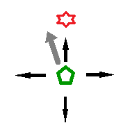
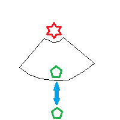

Defensive Techniques
Dark Souls is a game that will punish your sloppiness with a quick death. Part of succeeding involves being
able to survive whatever gets thrown at you and then retaliating in kind. This section talks about all the
ways you can stay alive in combat.
Rolling
Rolling is the most explicit form of avoidance that the game gives you. When locking onto an enemy, you may
roll left, right, forwards, and backwards (relative to the enemy's position).
When you're not locked on, you simply roll in the direction you are travelling.
One technique that experts use is to unlock from an enemy in order to roll diagonally in relation to their
opponent, as shown in the illustration.

Blocking
Blocking is also pretty explicit, just hold down the block button to keep your shield up. While blocking,
your stamina will recharge much slower. When your shield is hit, you will lose stamina and take a reduced
amount of damage. The amount of stamina lost is dependent on the shield's stability stat, which is
a percent reduction; i.e. 100 stability means you lose no stamina from blocking (the shield with
the highest stability in the game maxes out at 86). The damage that you take is dependent on the type of damage
dealt and your shield's reduction for that kind of damage. For example, a shield with 90% fire reduction will
reduce all blocked fire damage by 90%. I highly recommend any shield you come across that has 100% physical
reduction; this means you'll be able to block the most common forms of attack without being pressured
by a dwindling health bar.
Parrying
Parrying can be an especially effective means of defense, as it allows you to quickly follow up with lethal force.
Medium shields, small shields, and parrying daggers, all have a unique move that causes your character to
swing their left arm to deflect a blow. Once a blow has been deflected, the
attacker is stunned and you are allowed to follow up with a deadly attack animation. The trouble with
parrying is that timing can be dangerous and difficult. Trying to deflect too early or too late leaves you
vulnerable, so parrying haphazardly can often lead to your demise. You often are required to memorize an
enemy's attack pattern before being able to successfully predict when they will swing their weapon at you.
For this reason, I don't recommend parrying for new players, though it's worth learning, as it is especially
effective against the game's bosses. I have an example of this in the following video.
Spacing
The final, most overlooked, easiest to perform, and most important method for avoiding damage, is spacing.
All this means, is that where you are in relation to your enemy can allow you to not take damage regardless of
your ability to parry, roll, or block. For example, stepping into melee range in order to deal damage to an enemy,
then stepping out of range to avoid retaliation. It sounds simple, but all too often I see players blocking or
rolling away from hits that they could have easily avoided just by stepping out of the way. Doing this allows you to
save tons of stamina and health. You can often cause an
enemy to leave themselves open by stepping just inside their attack range, and then immediately stepping out.
They will swing and miss, giving you the opportunity to strike. I've illustrated this in the following image.

Offensive Techniques
Being able to avoid attacks is important if you plan on making it in Dark Souls, but you'll never progress if
you don't retaliate. I'm assuming you'll know how to mash the attack button, so this section will
focus on some of the more advanced fighting techniques available to you.
Backstabbing
Backstabbing is a bit tricky when you're first starting out, but once you get the hang of it, it very much
trivializes many of the game's lesser enemies. To perform a backstab, simply stand behind a human shaped
opponent, then move toward them and use the attack button. Normally an enemy will be facing you, so
the real trick is to get them not to. In a situation where you are playing with a friendly phantom, this is especially
easy. While they are looking at one of you, the other player can circle around back for the kill. Usually
you are alone, in which case you can still circle around them after they have swung their weapon
and missed. It you're intent on getting a backstab, it is often best to position yourself as close to your
target as possible and begin circling them before they've even swung; this way you get the maximum amount of time
to land the hit. You will also want to circle to the side that they are holding their weapon on, as the
side without a shield is more vulnerable. In the following video, I demonstrate how to
defeat an enemy through the use of backstabs.
Kicking
Kicking is useful against small or human size opponents. If they are hiding behind a shield, slashing at them
will only recoil your character. By beginning to move forward and attacking at the same time, your character will
kick forward, causing your target to real from the kick's force. This is the best method for punishing an opponent
that constantly hides behind a shield. The following video demonstrates this concept.
Poise Breaking
Part of what makes Dark Souls great is that all of the rules that affect the player by are also followed by
every other character in the game. As such, enemy characters also have a limited amount of poise, and can be
staggered if their poise is broken. This means that slashing away blindly is actually a valid strategy. If you
chip away at an enemy's shield long enough, they eventually stagger; assuming you have the stamina to attack that
much without stopping. As a strategy, this works best against only a single enemy, otherwise your stamina will be
depleted after breaking the first target's poise and the other hostile might be able to take advantage of your
exhaustion. If using one of the massive club weapons, you can often break poise with every strike; leaving
them permanently disabled for as long as you can swing at them. Swinging with both hands can also up the damage
of your strikes, allowing you to break their poise much faster.
None of these techniques are entirely necessary to learn, but how to perform them and knowing when to use them can
turn a measly fighter into an exceptional one. I recorded the following clip to showcase the use of these of skills.
It starts with a block and a kick, then I duel hand a weapon to poise break an enemy, and finally I avoid a slow
strike and punish my opponent with a backstab.
Weapons
Weapons perform a very important role in the Dark Souls games. In fact, I would say that what weapon you choose
has the largest impact on your gameplay experience. To that end, I'm going to analyze each of the different weapon
types in the game so that you can get a general idea about the purpose of each type and for which type you
might prefer. Note that there are hundreds of unique weapons in the game of Dark Souls, so while most
weapons of a particular type might suit you, there are numerous outliers that stray from the general mold
of their cousins.
Daggers
Daggers can attack fast and have a high critical attack value, making them perfect for parry ripostes and
backstabs. There are also a number of parrying daggers that you may use in place of a shield. These are better
at parrying than shields, but don't have any real blocking power.
Straight Swords
Straight Swords act as the starting weapon for several classes. They have easily chained swinging attacks that make
them easy to use. They only have mild scaling for strength and dexterity though, and often won't be very powerful by
the end of the game.
Greatswords
Greatswords are the weighty cousins of the straight swords. They have scaling that is evenly distributed
between strength and dexterity, but offer enough stopping power to keep lesser enemies indefinitely staggered.
Ultra Greatswords
Even larger than the greatswords. These weapons require massive strength to wield, and can often crush enemies in
a single blow. Use with caution, as the wind-up time can often leave you vulnerable to the quicker lackies.
Curved Swords
Again, related to straight swords, but with much higher dexterity scaling. These weapons utilize wide swings with
short blades, so be warned that you will need to be very close to your enemies to be able to hit them.
Katanas
Katanas are for dexterity build character and have a long range to them. The biggest downside is that some
of them break easily; but this is not usually a problem.
Curved Greatswords
Curved greatswords offer much of the same things as other greatswords but with an emphasis on dexterity rather than
strength. They have very unique move sets.
Piercing Swords
These fencing swords are fast and precise. They use a jabbing motion and often strike so fast that the enemy has no time
to react and so must be preemptively defensive. You can also jab while holding your shield up, making for some safe,
if slow, combat; although, shielding while jabbing will cost extra stamina.
Axes
Axes deal massive damage but can sometimes be awkward to use in a fight. Some axes offer no comboing of attacks, which
makes them less ideal for chopping away at slow-moving bosses. Strength is the main attribute for this weapon type,
Great Axes
These weapons take the idea of axes and moves it further in the direction of one-hit-kill territory. In fact, many of these
strength based weapons have the highest attack power in the entire game.
Hammers
Truly blunt instruments. Hammers are slow and don't usually allow comboing, though their strength scaling is relatively high.
A must try for any dedicated strength build.
Great Hammers
A high damage strength type weapon. Again, these fall into the category of being able to kill many enemies in a single blow.
Unlike smaller hammers, some of these are able combo by swinging around the player's body. If the first strike doesn't kill
an enemy, the second and third strike will.
Fist & Claw
An almost identical move set as your bare fists, these weapons have the shortest range in the game, but can land many
strikes in a row and tries to take out enemies with a flurry of damaging strikes.
Spears
Throughout history, spears have demonstrated themselves to be effective fighting tools, and in Dark Souls this is no exception.
These have a great range, allowing you to reach your enemies without them being able to reach you. Spears also have the
special property of being able to attack while holding up your shield. A big shield and a long spear make for a hard nut
to crack. It's the perfect weapon for defensive players.
Halberds
Much like the spear in that you usually hit your enemies before they can hit you. Halberds also deal more damage than spears,
but lack the ability to attack behind a shield. Halberds are considered to be solid, and all around, useful weapons
throughout all stages of the game.
Whips
Whips are more of a novelty than practical weaponry. They have a short range and often leave your back wide open.
Although, they are quite good at delivering status ailments.
Bows
Bows are great for taking out enemies before a fight even begins, and are useful for pulling away enemies one-by-one so
that you don't have to engage an entire group at once. If you are quick, you might also be able to use it during melee combat.
Greatbows
A much more dangerous weapon than your standard bow. The greatbow is strong enough to knock enemies back a few yards, and
so can be used to shoot enemies off of ledges as well as to deal massive damage from afar. Its long wind-up prevents it
from being of use in a close-quarters engagement.
Crossbows
The crossbow is a much faster weapon than the bow. It lacks any ability to snipe, but is much more versatile
in a close-quarters engagement due to its ability to quickfire accurately with a lock-on.
If you wish to find out more about specific weapons, you can find a myriad of stats, locations, and move sets on one of the
many Dark Souls wikis. Here's one of them: http://darksouls.wiki.fextralife.com/Dark+Souls+Wiki